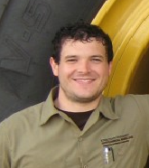
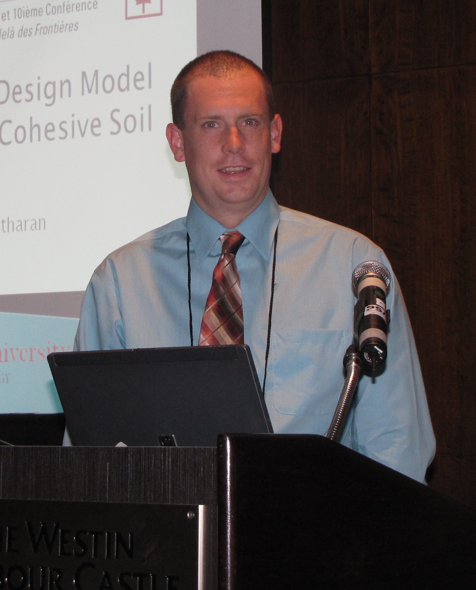

| Sri Sritharan Department of Civil, Construction & Evnironmental Engineering |
| Wilkinson Chair Professor in Engineering (515)294-5238 | sri@iastate.edu |
PhD Students
Current
| Name | Topic | Co-Major Professors | |
| Satish Jain | UHPC | -- | |
| Zhao Cheng | ABC Seismic Connections | -- | |
| Philippe Kalmogo | Drilled Shafts | J. Ashlock | |
| Julia Anderson-Lee | Rocking Structures | S. Hansen | |
| Bin Cai | Wind Turbine Towers | -- | |
|  | Bradley Fleming | Soil Improvement; SFSI | -- |
Completed
| Topic Area/Year | Co-Major Professors | Current Position | |
| Tall Concrete Wind Turbine Towers | -- |
Structural Engineer, Wiss Janney, Elster Associates, Inc. |
|
| Precast Walls; Floor Systems; Seismic | R. Henry |
Structural Engineer, Beca, Auckland, New Zealand |
|
| Precast Rocking Walls | -- | Assistant Professor, California State University, Fresno |
|
| Time Dependent Effects of Bridges | M. Rouse | Structural/Bridge Engineer, Jacobs | |
| Hollow Bridge Columns; Concrete Confinement, 2015 | -- | Assistant Professor, Tianjin Chengjian University, Tianjin, China |
|
| ABC for Seismic Regions, 2014 | -- | Associate Professor, Dordt College, Sioux Center, IA | |
|  | Seismic Design of Bridge Columns; SFSI, 2013 | -- | Bridge Engineer, FIGG |
| Precast Seismic Building Systems, 2011 | J. Ingham | Senior Lecturer University of Auckland, New Zealand | |
| LRFD for Driven Piles; Pile Setup, 2011 | -- | Assistant Professor, University of Wyoming-Laramie | |
| LRFD for Driven Piles; 2010 | -- | Associate Professor, Faculty of Civil Engineering Department, The British University in Egypt | |
| Rectangular Walls; Precast Walls; PreWEC, 2009 | -- | Assistant Professor, University of Alabama-Tuscaloosa | |
| SFSI; Frozen Soil Effects; Seismic, 2009 | M. Pender |
Senior Lecturer, University of Auckland, New Zealand |
|
| Nonrectangular Concrete Walls, 2009 | -- | Structural Engineer, HNTB Corporation, ME | |
| Jointed Precast Walls; Hybrid Frames, 2008 | -- | Senior Structural Engineer, Ministry of Transportation, Ontario, Canada | |
| Strut-and-Tie Method for Structural Frames, 2005 | J. Ingham | Project Manager, Ove Arup & Partners, Hong Kong |
Home | Topics | Projects | Publications | Portfolio | Group | Contact
- Visitors Count
-
- View Statistics
Copyright © 2010 Sri Sritharan| Best Viewed in Mozilla Firefox